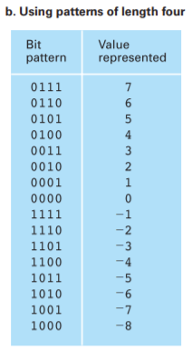
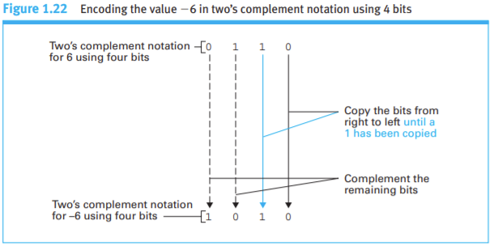

JavaScript program to add 2 integers demonstrating twos complement.

Two compliment notation is:
bin.png)
list of two notation examples
The twos complement for is :
The twos complement for is :
The twos complement binary addition of the 2 numbers is :
The base ten addition of the 2 numbers is :